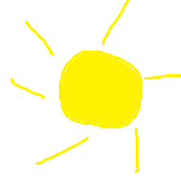

tasuta e-õppe kursused infotehnoloogias “Metshein.com pakub tasuta e-õppe kursuseid …” loob Google kirjelduse Pealkiri () – “T – metshein.com”. See tuleb otse sildist.
Kirjeldus () – .
See tuleb väljast.
Kui seda pole,
loob Google kirjelduse lehe sisust automaatselt.
Domeeni aadress () – “https://metshein.com”. See on veebiaadress ise, mitte metaandmetest.
Favicon – tulemuses näha väike ikoon. Selle määrad abil.
Alamlingid () – “Logi sisse”, “Andmebaaside Alused”, “E-poe Loomine WooCommerce’iga”, “Haridus” jne.
Neid ei saa metaandmetega otse kontrollida. Google genereerib need ise, kui veebileht on hästi struktureeritud ja sisemised lingid on selged.

| A | B |
| C | D |
| E | F |